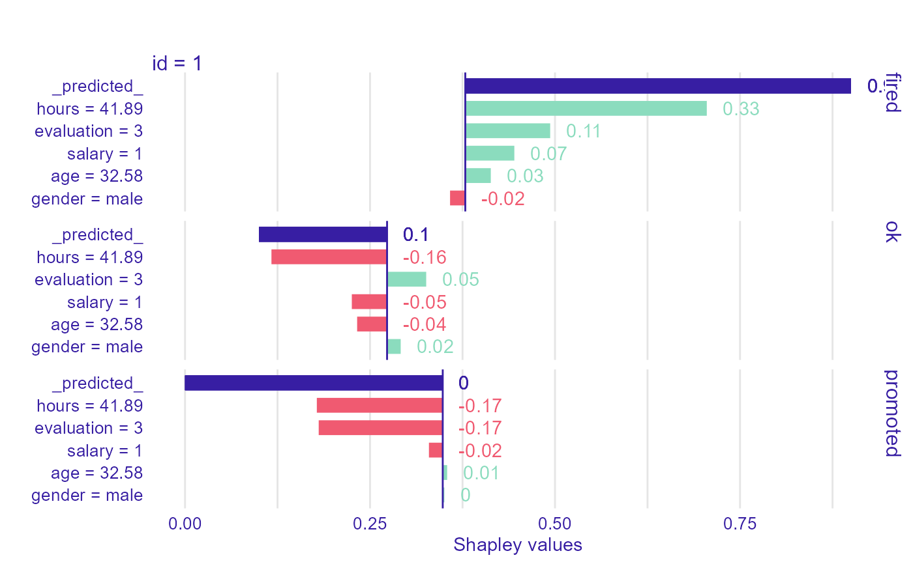
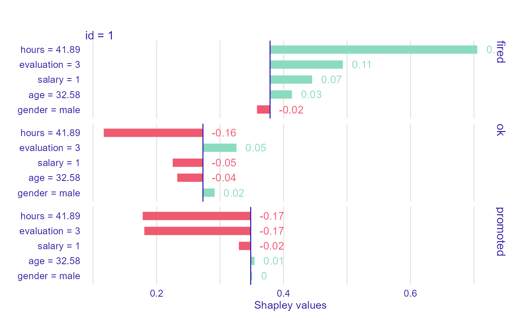
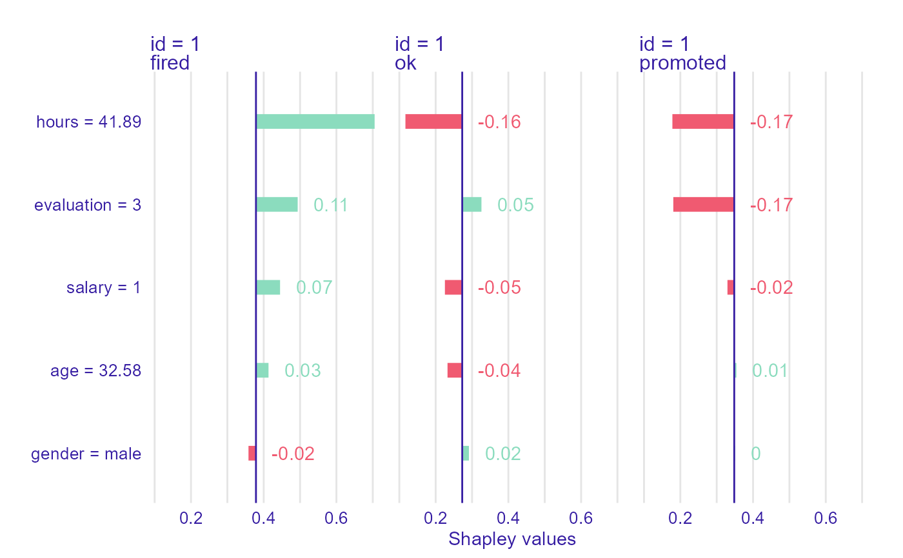

Plots Attributions for Variables of Individual Prediction
Function 'plot.individual_variable_effect' plots variables effects plots.
# S3 method for individual_variable_effect plot(x, ..., id = 1, digits = 2, rounding_function = round, show_predcited = TRUE, show_attributions = TRUE, cols = c("label", "id"), rows = "ylevel", selected = NULL, bar_width = 8, vcolors = c(`-` = "#f05a71", `0` = "#371ea3", `+` = "#8bdcbe", X = "#371ea3", pred = "#371ea3"))
Arguments
| x | an individual variable effect explainer produced with function `individual_variable_effect()` |
|---|---|
| ... | other explainers that shall be plotted together |
| id | of observation. By default first observation is taken. |
| digits | number of decimal places (round) or significant digits (signif) to be used. See the |
| rounding_function | function that is to used for rounding numbers. It may be |
| show_predcited | show arrows for predicted values. |
| show_attributions | show attributions values. |
| cols | A vector of characters defining faceting groups on columns dimension. Possible values: 'label', 'id', 'ylevel'. |
| rows | A vector of characters defining faceting groups on rows dimension. Possible values: 'label', 'id', 'ylevel'. |
| selected | A vector of characters. If specified, then only selected classes are presented |
| bar_width | width of bars. By default 8 |
| vcolors | named vector with colors |
Value
a ggplot2 object
Examples
have_shap <- reticulate::py_module_available("shap") if(have_shap){ library("shapper") library("DALEX") library("randomForest") Y_train <- HR$status x_train <- HR[ , -6] set.seed(123) model_rf <- randomForest(x = x_train, y = Y_train, ntree = 50) p_function <- function(model, data) predict(model, newdata = data, type = "prob") ive_rf <- individual_variable_effect(model_rf, data = x_train, predict_function = p_function, new_observation = x_train[1:2,], nsamples = 50) pl1 <- plot(ive_rf, bar_width = 4) pl2 <- plot(ive_rf, bar_width = 4, show_predcited = FALSE) pl3 <- plot(ive_rf, bar_width = 4, show_predcited = FALSE, cols = c("id","ylevel"), rows = "label") print(pl1) print(pl2) print(pl3) } else { print('Python testing environment is required.') }